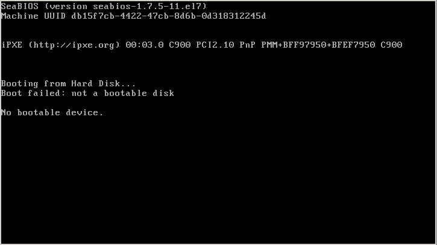
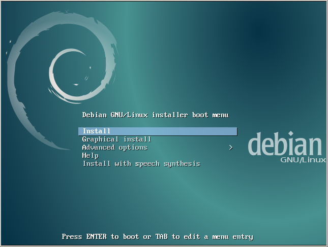

Управлять работой виртуальных машин QEMU удобнее всего через набор программ, входящих в пакет libvirt.
В Debian установка пакетов для работы с qemu и libvirt производится командами:
apt-get install qemu-kvm libvirt-bin
А начиная с 2018 года имена пакетов поменялись, и нужны такие команды:
apt-get install qemu-kvm libvirt-daemon libvirt-daemon-system libvirt-clients
Для работы потребуется две основных программы:
Для того, чтобы они нормально выполнялись, необходимо будет включить пользователя, из-под которого они вызываются, в группы kvm и libvirt:
adduser <youruser> kvm
adduser <youruser> libvirt
Начиная с 2018 года, группы libvirt уже не создается, и добавлять в нее пользователя не требуется.
Команды virsh-консоли можно вызывать двумя способами: в интерактивном режиме, находясь в консоли virsh, и в командном режиме, выполняя команду в текущем шелле:
$ virsh команда опции
Далее будут использоваться оба вида вызова команд без лишних пояснений. Просто иногда удобнее делать команду в консоли virsh, а иногда удобнее запускать в шелле.
Основные понятия
При работе с виртуальными машинами, используются следующие термины.
Хост-система и гостевая система
В виртуализации активно используются два понятия:
Важно их не путать.
Хранилище (pool)
Хранилище - это, по-сути, отдельный "каталог" (область), в котором складываются образы дисков виртуальных машин. Обычно создают минимум два хранилища - default для хранения образов жестких дисков и boot для хранения обазов загрузочных CD-дисков.
Получить список хранилищ, находясь в консоли virsh, можно так:
virsh # pool-list --all
Name State Autostart
-------------------------------------------
boot active yes
default active yes
Образ диска (vol)
Образ диска - это снимок данных диска виртуальной машины, сохраненный в том или ином формате. libvirt понимает несколько форматов образов. Так же возможна работа с образами CD/DVD дисков. Каждый образ хранится в том или ином хранилище.
Получить список образов, сохраненных в хранилище default, можно командой:
virsh # vol-list default
Name Path
------------------------------------------------------------------------------
diagonal.img /var/lib/libvirt/images/diagonal.img
terminator.img /var/lib/libvirt/images/terminator.img
А список образов, хранимых в хранилище boot, получается подобной командой:
virsh # vol-list boot
Name Path
------------------------------------------------------------------------------
debian-8.4.0-amd64-DVD-1.iso /var/lib/libvirt/boot/debian-8.4.0-amd64-DVD-1.iso
debian-8.5.0-amd64-netinst.iso /var/lib/libvirt/boot/debian-8.5.0-amd64-netinst.iso
SL-6.7-x86_64-DVD.iso /var/lib/libvirt/boot/SL-6.7-x86_64-DVD.iso
SL-7.2-Everything-Dual-Layer-DVD-x86_64-2016-02-02.iso /var/lib/libvirt/boot/SL-7.2-Everything-Dual-Layer-DVD-x86_64-2016-02-02.iso
Виртуальная машина
Виртуальная машина в libvirt - это некая конфигурация оборудования, которая может быть виртуально запущена. В описании конфигурации прописывается: какой виртуальный микропроцессор используется, какая виртуальная сетевая карта "вставляется", сколько памяти имеет виртуальная машина, какой образ (vol) использовать для основного диска виртуалки, какой образ использовать в качестсве CD-Rom, который вставлен в виртуалку и т. д.
Получить список виртуальных машин и посмотреть их состояния можно командой:
virsh # list --all
Id Name State
----------------------------------------------------
2 firstvirt running
Виртуальный коммутатор
При настойке сети для виртуальных машин, помимо сетевого интерфейса бриджа (сущестующего в рамках хостовой системы) в среде виртуализации создается виртуальный коммутатор. Вначале средствами Linux настраивается сетевой интерфейса бриджа так, чтобы он смотрел в локальную сеть предприятия. Потом в среде виртуализации создается виртуальный коммутатор, который одним концом "воткнут" в бридж. А потом все создаваемые виртуальные машины втыкаются в этот виртуальный коммутатор.
Таким образом, сетевые интерфейсы виртуальных машин будут через виртуальный коммутатор и системный бридж видны в сети предприятия. Они смогут нормально работать в сети предприятия так же, как и обычные компьютеры, подключаемые к сети. Они смогут получить IP через DHCP-сервер предприятия, они смогут воспользоваться DNS-сервером предриятия и т. п.
Подробнее о настройке сети и виртуального коммутатора написано ниже через пару разделов.
Создание виртуальной машины
Создавать виртуальную машину можно с помощью программы virt-install. Параметры примерно такие:
virt-install \
-n myvirthost \
-r 1024 \
--vcpus=2 \
--cdrom /var/lib/libvirt/boot/debian-8.5.0-amd64-netinst.iso \
--disk pool=default,size=300,bus=virtio,format=raw,cache=writeback \
--graphics vnc,listen=0.0.0.0
где:
Выполнение этой команды будет бесконечно долго. На экране будет примерно следующее:
Starting install...
Allocating 'myvirthost.img' | 300 GB 00:00:03
Creating domain... | 0 B 00:00:00
Domain installation still in progress. Waiting for installation to complete.
Это либо какой-то глюк, либо из-за того, что виртуальная машина сразу после создания запускается. Чтобы завершить процесс создания виртуальной машины, надо открыть еще один терминал, войти в консоль virsh, и выполнить команду destroy myvirthost:
virsh # list
Id Name State
----------------------------------------------------
2 firstvirt running
9 myvirthost running
virsh # destroy myvirthost
Domain myvirthost destroyed
virsh # list
Id Name State
----------------------------------------------------
2 firstvirt running
В консоли virsh доступны следующие основные команды:
Для дальнейших экпериментов надо запустить виртуальную машину. Следует понимать, что виртуальная машина создана, запущена, но инсталляции операционки на диск виртуальной машины еще не произошло.
Подключение к экрану виртуальной машины
Для инсталляции операционки необходимо иметь доступ к экрану виртуальной машины. Подключение к экрану производится по протоколу VNC. В Windows для этих целей можно использовать программу TightVNC.
IP-адрес, к которому надо цепляться VNC-клиентом - это адрес сервера, на котором крутятся виртуальные машины. Порт, к которому надо цепляться - 5900 или любой из последующих номеров. Для каждой новой виртуалки, если не задано конфигурирующих опций, обычно автоматически создается свой порт: 5900, 5901, 5902 и т. д. При дефолтных настройках пароль для подключения не требуется.
Допустим, что нужно подключиться к IP 10.153.0.25 на порт 5901. Тогда в программе TightVNC в строке Connection - Remote host надо указать 10.153.0.25:5901.
Будет открыто примерно такое окно:

Видно, что машина запустилась, но из БИОСа она не вышла. Загрузки с CD-Rom, указанного при создании машины, не произошло. Надо разбираться дальше.
Примечание: по каким признакам в окне загрузки можно определить, что виртуальная машина работает или остановлена? Для биоса и консольных режимов операционок все просто. Если курсор мигает - машина работает. Если курсор не мигает - машина остановлена.
При дальнейших экспериментах следует иметь в виду, что перезагрузка машины и прохождение БИОС происходит так быстро, что не заметно, как это вообще происходит.
Получение конфига виртуальной машины
Судя по информации в интернете, консоль virsh не позволяет полностью контролировать состояние и настройку виртуальной машины. Половину настроек придется делать через просмотр и правку конфига виртуальной машины. А чтобы править конфиг, надо его сначала получить.
Получить конфиг можно командой:
$ virsh dumpxml myvirthost > myvirthost.xml
Конфиг предстваляет из себя XML-файл, который можно править. После правки его можно применить командой:
$ virsh define myvirthost.xml
Имя машины в вышеприведенной команде указывать ненужно, так как оно прописано внутри xml-файла:
<name>myvirthost</name>
Однако, перед этой командой надо не забыть выключить (destroy) и, если необходимо, удалить (undefine) виртуальную машину.
Вставка образа CD-Rom в виртуальную машину
Посмотрев на полученный XML-конфиг виртуальной машины можно увидеть, что устройство CD-Rom есть, но ему не назначено никакого образа. А так же, забегая вперед, надо сказать, что не назначено последовательности загрузки с устройств, и поэтому машина пытается стартовать с жесткого диска, на котором еще нет файловой системы.
Параметры CD-Rom можно найти в XML-элементе domain - devices - disk:
<disk type='block' device='cdrom'>
<driver name='qemu' type='raw'/>
<backingStore/>
<target dev='hda' bus='ide'/>
<readonly/>
<alias name='ide0-0-0'/>
<address type='drive' controller='0' bus='0' target='0' unit='0'/>
</disk>
Сюда можно прописать iso-образ, добавив XML-элемент source:
<disk type='block' device='cdrom'>
<driver name='qemu' type='raw'/>
<backingStore/>
<target dev='hda' bus='ide'/>
<readonly/>
<alias name='ide0-0-0'/>
<address type='drive' controller='0' bus='0' target='0' unit='0'/>
<source file='/var/lib/libvirt/boot/debian-8.5.0-amd64-netinst.iso'/>
</disk>
Последовательнось загрузки можно найти в XML-элементе domain - os:
<os>
<type arch='x86_64' machine='pc-i440fx-rhel7.0.0'>hvm</type>
<boot dev='hd'/>
</os>
Видно, что здесь указана загрузка с жесткого диска, и никакого CD-Rom нет. Надо его добавить, причем перед жестким диском:
<os>
<type arch='x86_64' machine='pc-i440fx-rhel7.0.0'>hvm</type>
<boot dev='cdrom'/>
<boot dev='hd'/>
</os>
После таких правок можно остановить виртуалку и применить конфиг:
$ virsh destroy myvirthost
$ virsh define myvirthost.xml
Далее можно запустить виртуальную машину:
$ virsh start myvirthost
И тут как повезет. Народ утверждает, что у него сразу работает загрузка с CD-Rom. Но может произойти и так, что образ не будет подключен. В этом можно убедиться, снова получив конфиг. Настройка последовательности загрузки останется, а пути к образу CD-Rom не будет.
К счастью, есть возможность подключить образ CD-Rom на работающую машину. Когда машина работает, можно выполнить следующую команду:
$ virsh attach-disk myvirthost /var/lib/libvirt/boot/debian-8.5.0-amd64-netinst.iso hda --type cdrom --mode readonly
После чего перезагрузить машину:
$ virsh reset myvirthost
В результате мы увидим:

Следует ли сразу приступать к инсталляции? Нет, потому что у нас еще не настроена сеть.
Настройка сети
Настройка сети производится в три этапа:
Настройку моста и коммутатора я, к сожалению ни разу не делал (а делал специально обученный человек), поэтому отсылаю читателя к статье Установка и настройка KVM. Там есть раздел "Шаг 3. Настройка сети на хост-сервере", в нем все подробно расписано. Здесь написано только то, что стало понятно из объяснений.
По-умолчанию в виртуальной среде настроен виртуальный маршрутизатор (в терминах libvirt - сеть) с именем default. Он по-умолчанию настроен в режиме NAT. Увидеть эту сеть можно так:
virsh # net-list
Name State Autostart Persistent
----------------------------------------------------------
default active yes yes
Увидеть (и сохранить) конфиг этой сети можно так:
virsh # net-dumpxml default
Но если нам нужен простой бридж, то чтобы не путаться и не плодить сущности, эту сеть надо удалить:
virsh # net-destroy default - потушить сеть
virsh # net-undefine default - удалить сеть
Создание моста (bridge)
Мне известно только, что в Linux на уровне хост-системы должен быть создан интерфейс бриджа, который будет виден в среде виртуализации. Для разных Linux интерфейс бриджа создается по-разному. Для Cent-OS интерфейс бриджа создается путем создания файла /etc/sysconfig/network-scripts/ifcfg-br0 со следующим содержимым:
DEVICE="br0"
ONBOOT="yes"
TYPE="Bridge"
BOOTPROTO="none"
STP="on"
DELAY="0"
IPADDR="10.153.0.25"
NETMASK="255.255.0.0"
GATEWAY="10.153.0.1"
После чего сеть перезапускается. Для операционок с systemd перезапуск сети производится командой:
systemctl restart network
В результате этих действий должен появиться сетевой интерфейс бриджа (br0):
# ip link list | grep br0
6: eth0: <BROADCAST,MULTICAST,UP,LOWER_UP> mtu 1500 qdisc noqueue master br0 state UP mode DEFAULT
7: br0: <BROADCAST,MULTICAST,UP,LOWER_UP> mtu 1500 qdisc noqueue state UP mode DEFAULT
8: vnet0: <BROADCAST,MULTICAST,UP,LOWER_UP> mtu 1500 qdisc pfifo_fast master br0 state UNKNOWN mode DEFAULT qlen 500
20: vnet1: <BROADCAST,MULTICAST,UP,LOWER_UP> mtu 1500 qdisc pfifo_fast master br0 state UNKNOWN mode DEFAULT qlen 500
Если в системе не установлен пакет ip, то похожую информацию можно получить с помощью команды ifconfig.
В среде виртуализации бридж будет виден примерно так:
virsh # iface-list --all
Name State MAC Address
---------------------------------------------------
br0 active 98:57:a5:61:5f:1c
eth0 active 98:57:a5:61:5f:1c
lo active 00:00:00:00:00:00
Посмотреть настройки сетевого интерфейса бриджа в виртуальной среде можно командой:
virsh # iface-dumpxml br0
<interface type='bridge' name='br0'>
<protocol family='ipv4'>
<ip address='10.153.0.25' prefix='16'/>
</protocol>
<protocol family='ipv6'>
<ip address='fe80::9657:a5ff:fe6d:af1a' prefix='64'/>
</protocol>
<bridge>
<interface type='ethernet' name='eth0'>
<link state='up'/>
<mac address='95:57:a5:6d:5f:1c'/>
</interface>
<interface type='ethernet' name='vnet0'>
<link state='unknown'/>
<mac address='fe:54:00:e9:81:96'/>
</interface>
<interface type='ethernet' name='vnet1'>
<link state='unknown'/>
<mac address='fe:54:00:9e:8a:5b'/>
</interface>
</bridge>
</interface>
Здесь в настройках аплинка (up) указан интерфейс eth0. Именно этот реальный интерфейс смотрит на сеть предприятия:
...
<interface type='ethernet' name='eth0'>
<link state='up'/>
<mac address='95:57:a5:6d:5f:1c'/>
</interface>
...
Создание виртуального коммутатора
Как было сказано выше, в системе виртуализации, помимо бриджа, создается виртуальный коммутатор. Он не относится к какой-либо одной виртуальной машине, он просто существует в системе виртуализации. В него удобно втыкать сетевые интерфейсы виртуальных машин. Увидеть заранее созданный виртуальный коммутатор можно командой:
virsh # net-list --all
Name State Autostart Persistent
----------------------------------------------------------
to-br0 active yes yes
Посмотреть, как сконфигурирован виртуальный коммутатор, можно командой:
virsh # net-dumpxml to-br0
<network connections='1'>
<name>to-br0</name>
<uuid>569db4f6-f79d-47f6-99da-4dc4ef2a425e</uuid>
<forward mode='bridge'/>
<bridge name='br0'/>
</network>
Возможно, что создать такой виртуальный коммутатор можно командой:
virsh # net-create network-to-rb0.xml
Где содержимое файла network-to-rb0.xml следующее:
<network>
<name>to-br0</name>
<forward mode='bridge'/>
<bridge name='br0'/>
</network>
Создание виртуальной сетевой карточки для виртуальной машины
Виртуальную сетевую карточку можно задать двумя способами.
Первый - это удалить конфиг виртуальной машины, и заново создасть виртуальную машину командой virt-install, (см. раздел "Создание виртуальной машины"), добавив опции:
--network network=to-br0,model=virtio
Второй - это исправить конфиг виртуальной машины вышеописанными командами "virsh dumpxml myvirthost > myvirthost.xml" и "$ virsh define myvirthost.xml". В конфиге надо найти раздел:
<interface type='bridge'>
<mac address='52:54:00:9e:8a:5b'/>
<source bridge='br0'/>
<target dev='vnet1'/>
<model type='virtio'/>
<alias name='net0'/>
<address type='pci' domain='0x0000' bus='0x00' slot='0x03' function='0x0'/>
</interface>
И заменить строку <source bridge='br0'/> на:
<source network='to-br0' bridge='br0'/>
Естественно, при этом надо не забыть остановить, пересоздать и запустить виртуальную машину.